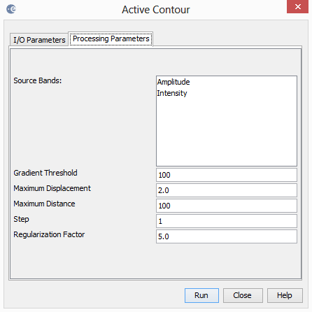
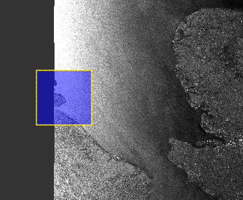
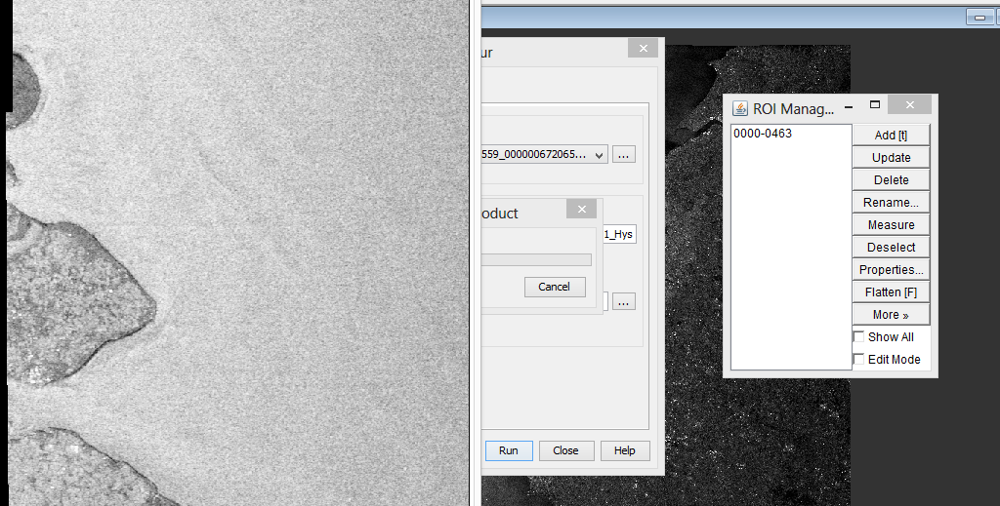
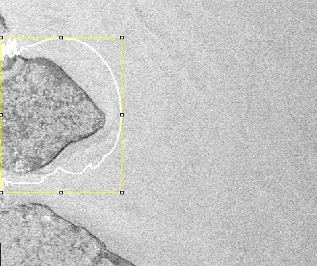

Active Contour

Figure 1. Active Contour Parameters
Parameters Used
The following parameters should be selected (see Figure 1 for example):
- Source Band: All bands (real or virtual) of the source product. User can select one or more bands
for producing filtered images. If no bands are selected, then by default all bands will be selected.
For complex product, only the intensity band can be selected.
- Iterations: the number of iterations
- Step: The step to display intermediate results
- Gradient Threshold: Threshold to find edges
- Maximum Displacement: Maximum displacements of points at each iteration
- Maximum Distance: Maximum distance to find and edges (used for growing or shrinking snakes)
- Regularization Factor: regularization value
First of all, select the region where the active contour will be initialized.

Figure 2. Selected Rectangle
Next, the image is shown with a ROIManager from ImageJ. Select a ROI by creating a rectangle on the image and the press Add from the ROIManager.

Figure 3. Selected Rectangle
The active contour is then initialized and all the steps are shown.

Figure 4. Selected Rectangle
Reference:
[1] Active Contour (Snake) ImageJ Plugin